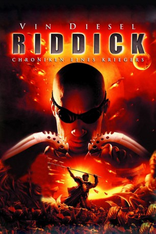

#1545 Riddick - Chroniken eines Kriegers
Alternativ: The Chronicles of Riddick
 
 IMDB-Wertung: 6.7 / 10
IMDB-Wertung: 6.7 / 10  Metascore: 38
Metascore: 38 
Jahre nach den Ereignissen von "Pitch Black" ist Riddick immer noch ein Gejagter, ein Vogelfreier innerhalb des bekannten Weltraums. Gemeinsam mit der inzwischen erwachsenen Kyra gerät er in einen galaktischen Konflikt zwischen zwei Gruppen, den auf einem seltsamen Kreuzzug befindlichen Necromongers unter der Führung des Lord Marshal und der Gegenseite, die von der geheimnisvollen Aereon geführt wird, die helfen könnte, das Geheimnis von Riddicks Herkunft zu klären...
Jahr: 2004
Dauer: 119 Minuten
FSK: 12
Land: USA Studio: Universal PicturesTonspuren: DTS - ,
Untertitel: Deutsch, Englisch,
Auflösung: 1080p (1920x800) Größe: 9144 MB
Genre: Action, Abenteuer, Sci-Fi, Thriller
Regisseur:  David Twohy
David Twohy
Drehbuch: Jim Wheat, Ken Wheat, David Twohy
Soundtrack: Graeme Revell
Darsteller:
Datei: X:\3-Trilogie(N-Z)\Riddick\Riddick - Chroniken eines Kriegers (2004, FSK12, 1920x800).mkv seit 15.07.2015
Festplatte: HD Collection-3(N-Z)-6(A-Z)
 Alle Filme aus Gruppe '3-Trilogie(N-Z)\Riddick'
Alle Filme aus Gruppe '3-Trilogie(N-Z)\Riddick'